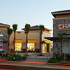

|  |
Welcome to Arlington Square!Shopping |
Detail
Welcome to Arlington Square! Arlington Square is conveniently located on the corner of Arlington Avenue and Madison Street. The Arlington Square renovation and expansion updated the look and appeal of the center. Renovations included a new fountain courtyard and the entire exterior of the center was updated with the addition of a new clock tower and other major tower elements.
Arlington Square is a premier one-stop shopping experience offering an exquisite outdoor environment for customer relaxation while eating or shopping. You are sure to find what you're looking for at any of our great merchants, including: Fresh & Easy Neighborhood Market, Ross Dress for Less, Dollar Tree, Big Lots, T-Mobile and Chase Bank.